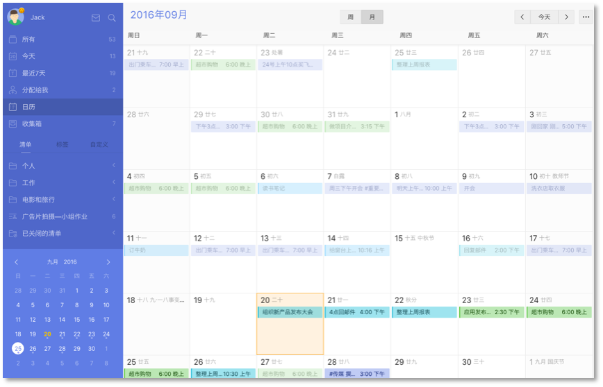

日历
日历视图
「日历视图」能够将任务显示在日历中，更直观、清晰。
注：该功能为高级账户功能。
- 单击页面左上角头像进入【设置】-【智能清单】，开启【日历】。
- 设置后，【日历】选项会出现在左边智能清单【最近7天】的下面。
- 点击【日历】,就可以进入日历视图查看任务。
- 拖动任务到其他日期可以快速修改任务到期日，点击日期可以直接添加当日任务，单击某条任务可直接编辑任务内容。

在日历页面上方有周视图和月视图的切换按钮，点击即可切换到周视图，直接查看一周任务，拖动任务轻松改变任务时间。

Mini日历
【Mini日历】在左侧边栏下端，是一个迷你周日历。
注：该功能为高级账户功能。
- 点击页面左上角头像进入【设置】-【实验功能】-启用【Mini日历】。
- 设置后,一个小日历将显示在清单栏的底部。
有小圆点的日期表示该日期有未完成的任务，点击日期将显示当天所有任务。您还可以单击任何日期进入任务界面，添加当日任务。

日历订阅
如何在其他日历中显示滴答清单的任务?
点击页面左上角头像进入【设置】-【日历订阅&邮件】。单击【获取URL链接】,你会得到一个URL地址，将URL链接复制到日历应用（ 谷歌日历, Outlook 日历及其他支持 URL 链接订阅的日历应用）中。

除了第三方日历应用，您还可以将滴答清单的任务添加在系统日历中。以iOS为例:
- 进入【设置】-邮件、联系人、日历选择【添加账户】；
- 选择【其他】，单击【添加订阅日历】，然后输入你从滴答清单获取的URL链接。
如何在滴答清单中显示其他日历事件?
这个功能允许您订阅其他日历到滴答清单，如谷歌日历。
注：该功能为高级账户功能。
- 点击页面左上角头像，选择【设置】-【日历订阅&邮件】；
- 在左侧面板选择【添加订阅】，然后输入你想订阅日历的URL。